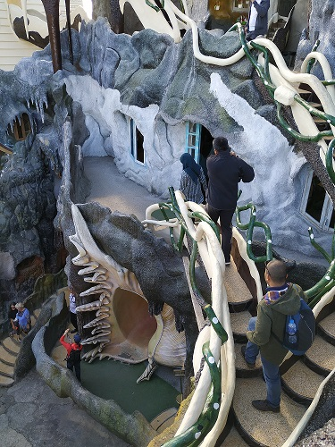
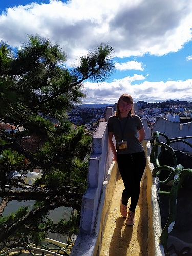
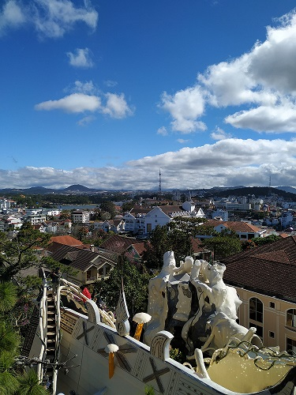
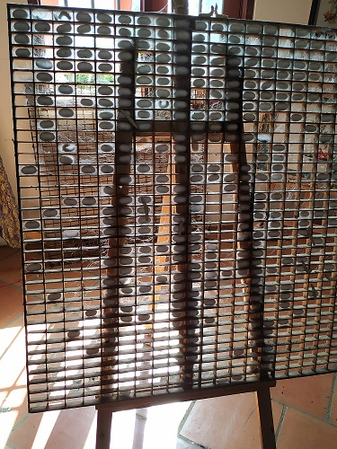
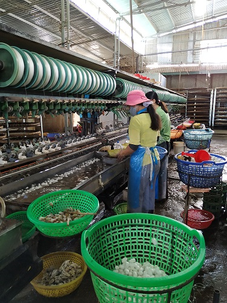
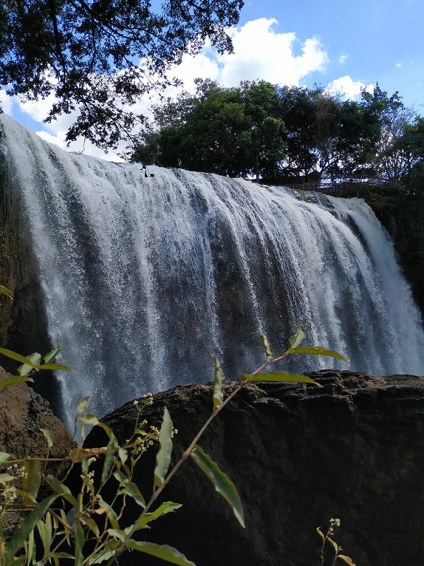
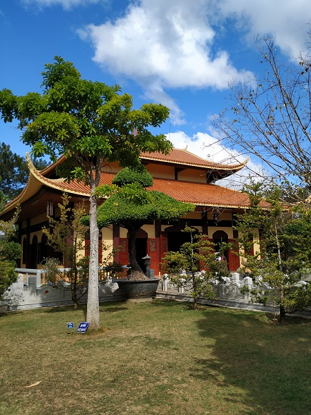
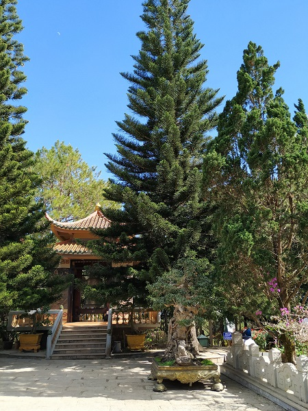
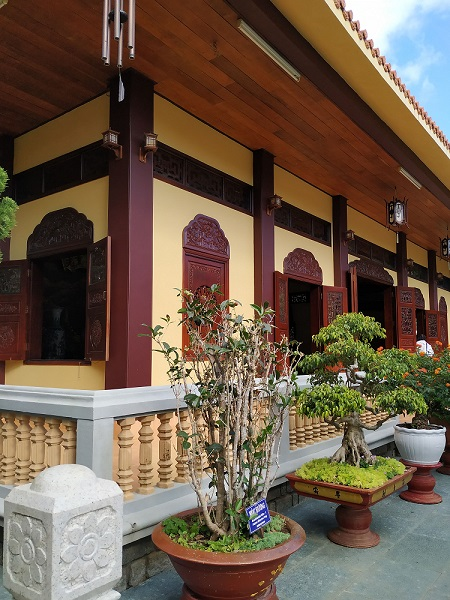

Excursion to Dalat
Sometimes escape excursions is impossible, it was the only chance to see Dalat, the city located 1500 m above sea level, in mountains and with slightly another climat. My main aim was an observation spot in mountains on the way to Dalat. Can say right now, there was awful fog and nothing further that 1 m was impossible to see. Then our first stop was the Crasy house. Surprisingly it made an impression on me. There were some really high bridges with an interesting view.



The second interesting place was a factory of silk. I can't imagin how people work in that poor conditions. I bought a scarf like souvenir, but don't think that it had a good quality. Our guid gave us two pods and of course Kostia saved them and brought them to Russia despite my strong resistance. In my imagination we were arrested at airport with all awful consiquences. Moreover, through some months in Russia, a butterfly protruded from a pod.



The third place was a waterfall. I would say a hell waterfall, there were so hot, I thought I would die. But photos are nice.



Then we visited a park with small zoo and some waterfalls. To get to one of them we used an electric sleigh. We controlled the speed, so Kostia not often slowed it down. After parks we went to a quite big territory of Truc Lam Temple. Unfortunately, because of it was an excursion we weren't able to use a cable car to get to this Temple. Everybody wrote that the view frome a cable car cabin would amazing. All we had it was a fast walk throught a part of Temple's park.



The last stop was a surprise for us. I heard a lot about a temple that was made frome a millions of shatters of ceramic dishes, but couldn't imagine that it would be so fascinating and tall. Of course we climbed up upstairs, because of it were almost late for our bus. Other people frome our group wanted to go back to hotels and just walking near the temple and bus. They missed unreal emotions that could be found only upstairs. Such moments are saved at memory better then other excursion information. Without Kostia I wouldn't be so brave to go up, on the highest terrace.


Summaries:
1 – I hope that next time we will go to different places without excursion
2 – Climb upstairs, no matter how difficult or scary it is. Probably you will have the most strong and cool emotions about a trip because of it.
3 – If an excursion is inevitable - take an excursion in a small bus, like about maximum 10 people.